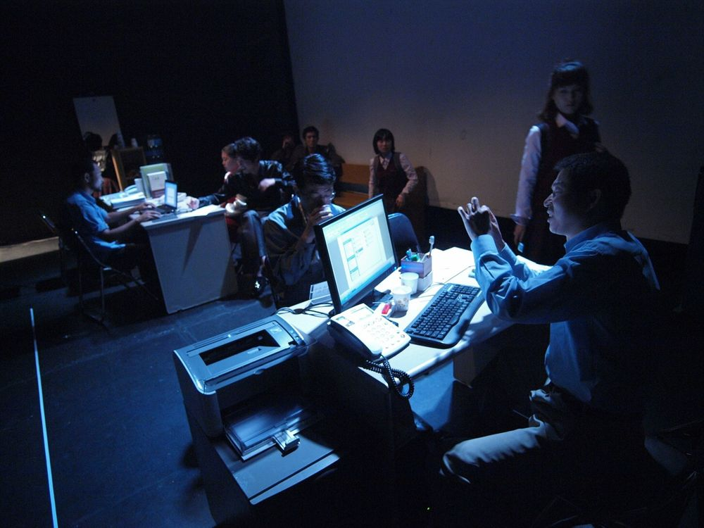

20대 후반의 한 여자가 지하철 선로에 뛰어들어 숨진다. 신원을 알 수 있는 것은 반지 하나와 축하카드 한 장뿐이고, CCTV 기록은 사라졌으며 목격자인 여고생들은 경찰이 오기 전에 자리를 떴다. 같은 시각 경찰서 조사계에서는 혼인빙자 사건의 대질이 이어진다. 서로 무관해 보이는 사건들이 하나로 엮이면서, 무심코 던진 돌에 개구리가 죽듯 행위의 의도와 상관없이 죄의 얽힌 타래 끝에 서 있게 되는 우리의 모습을 드러낸다.
2009.8.28–29 / 떼아뜨르추 - 서울프린지페스티벌
2009.9.25 / 광주 동산아트홀 - 광주평화연극제
2009.11.3–29 / 연극실험실 혜화동1번지
2009.12.10–2010.1.31 / 나온씨어터
2010.8.31–9.9 / 국립극장 별오름극장 - 세계국립극장페스티벌 초청
작: 고재귀
연출: 윤한솔
드라마터그: 박상현
의상: 이유선
조명: 최보윤
음악: 민경현
출연(2010): 선종남(김철중), 강효정(정선미), 이동영(송기철), 신재환(장석구), 김문호(조수호), 이필주(최창석), 류경인(민수진), 황미영(유현숙), 이문하(권지선)
이전: 진과 준 | 다음: 의붓기억-억압된것의귀환
아카이브로 돌아가기 | 아무 작품이나
발행일 2026.11.13